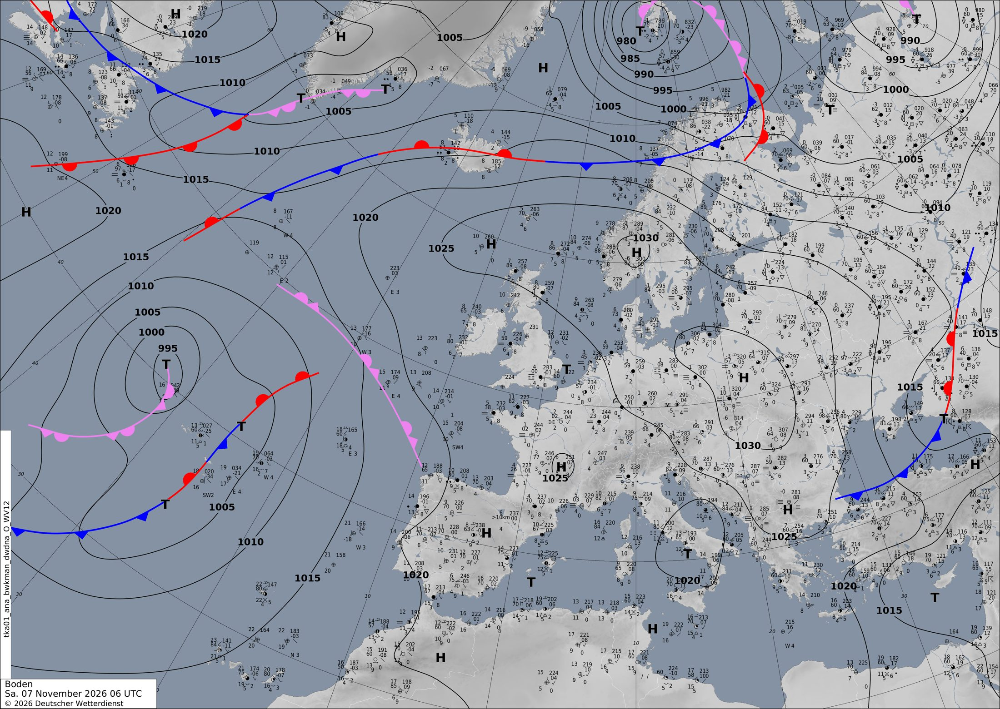

Una borrasca lenta al oeste de la Península empuja aire templado y lluvia
Una borrasca atlántica se queda casi quieta frente a Portugal y Galicia, mientras un anticiclón escandinavo mantiene a Francia en calma. Del domingo al lunes, el viento del sur traerá calor suave a la Península y lluvia intensa al oeste.
Europa y el Atlántico
Hoy, sábado, el gran protagonista está en el Atlántico: una borrasca de 993 hPa al oeste de las Azores. Encima, a unos 5500 m, tiene su propia bolsa de aire frío: un mínimo de 543 dam en el mapa de 500 hPa. Cuando la baja de superficie y la de altura están apiladas, la borrasca es «madura» y avanza despacio, porque ninguna corriente en chorro la arrastra deprisa hacia Europa.
En el satélite de esta mañana se ve su firma: un remolino de nubes y, al este, una gran banda blanca en forma de coma frente a Portugal (mira aquí). La carta del DWD de las 06 UTC dibuja ahí una «T» de 995 hPa y un frente ocluido que se acerca a Galicia. Modelo y análisis coinciden.
Mañana, domingo, la borrasca se ahonda hasta 978 hPa y se sitúa a unos 350 km al oeste de la Península. El lunes, casi en el mismo sitio, marca 975 hPa. Fíjate en sus isobaras apretadas y en la banda de lluvia que la rodea (mira aquí). El martes de madrugada empieza a subir hacia el oeste de Irlanda, con 977 hPa.
El otro gran protagonista es el anticiclón de Escandinavia: 1031 hPa sobre el sur de Noruega hoy. Su influencia llega a Francia y al centro del continente: aire quieto, cielos bastante despejados y noches frías. Con los días se retira hacia el este (1033 hPa sobre Rumanía mañana).
¿Por qué importa tanto dónde está la borrasca? Porque gira en sentido contrario a las agujas del reloj y, por su lado oriental, empuja viento del sur hacia la Península y Francia. En el mapa de altura se ve cómo, por delante de ella, se levanta una dorsal de aire templado: los colores anaranjados suben hacia el norte (mira aquí). Ese aire suave y húmedo, obligado a subir, alimenta la lluvia de los próximos días.
Mientras tanto, una pequeña baja fría en altura al sur de Irlanda cruza mañana hacia Londres y el lunes hacia el mar del Norte. A su paso, el chorro se acelera sobre Suiza hasta unos 214 km/h el lunes de madrugada.
Un aviso honesto: a +72 h, que la borrasca quede cien kilómetros más al norte o al sur cambia mucho dónde llueve más. Es normal que los modelos retoquen estos detalles en las próximas pasadas.
En península ibérica y Baleares
La borrasca no llega a entrar, pero su borde oriental marca el tiempo en la Península. Hoy ya se nota: entre las 00 y las 12 UTC el modelo acumula hasta 22 mm en algún punto, probablemente del oeste, al paso de la banda del frente ocluido. Sobre Lisboa hay algo de CAPE, es decir, energía para chubascos. En cambio, en el interior la noche ha sido fría, con hasta −2 °C a medianoche en algún punto.
Mañana, domingo, el viento gira al sur y llega aire más templado. A mediodía se alcanzan hasta 26,3 °C en las zonas más cálidas, y a 850 hPa la media peninsular sube de 8 °C hoy a unos 10–12 °C entre mañana y el lunes.
El lunes es el día más activo. Entre la noche del domingo y el lunes a las 00 UTC caen hasta 36 mm en 12 horas en la zona de Lisboa y el golfo de Cádiz. Por la mañana del lunes (00–12 UTC) el máximo sube a 61 mm, con viento de hasta 64 km/h y una presión mínima de 997 hPa en la región. Por la tarde y la noche, la lluvia se desplaza hacia Galicia, con hasta 50 mm (mira aquí). ¿Por qué ahí? La lluvia es frontal y además orográfica: el viento del sur y del suroeste choca con las montañas del oeste y se ve forzado a subir.
En el este, lejos de la lluvia, el viento del sur deja un ambiente casi veraniego: hasta 28,7 °C a mediodía del lunes en algún punto. Ojo a Baleares: el martes de madrugada aparece mucho CAPE (hasta 1736 J/kg) a unos 160 km al sur de las islas. Es el ingrediente de las tormentas sobre el mar (mira aquí).
En Francia
Francia está hoy bajo el anticiclón: la carta del DWD dibuja incluso una «H» de 1025 hPa sobre el centro del país. Con aire en calma y noches despejadas, el suelo pierde mucho calor. En las montañas el modelo da −10,2 °C a medianoche de hoy y −17,7 °C a medianoche de mañana. Son valores de las cumbres alpinas, no de las llanuras. En los valles, el aire frío se estanca bajo una inversión térmica.
Solo el oeste y el suroeste, más cerca de la borrasca, recogen algo de lluvia: entre 7 y 11 mm en 12 horas como máximo de hoy a mañana.
Mañana a mediodía pasa por encima del norte del país un núcleo de la corriente en chorro de unos 63 m/s, en torno a 230 km/h, a 10 km de altura. Abajo apenas se nota (mira aquí).
Del lunes al martes cambia el decorado: el anticiclón se va y la presión baja hasta unos 1005 hPa. El viento del sur trae aire templado: a 850 hPa se llega a 15 °C y, a mediodía del lunes, hasta 21,7 °C en el sur. La lluvia aumenta: 14 mm en 12 horas el lunes por la mañana y hasta 35 mm entre el lunes a mediodía y el martes de madrugada. El modelo la sitúa sobre todo hacia el sureste, por la zona de las Cevenas. Allí el CAPE de 744 J/kg permite chubascos tormentosos. El viento llega hasta 45–49 km/h.
París y alrededores. Hoy: 2,8–4,8 °C a medianoche y 7,9–10,1 °C a mediodía, sin lluvia y casi sin viento (5–6 km/h). Domingo: 4,5–7,3 °C a medianoche, apenas 0,2 mm durante la noche, y 9,8–10,8 °C a mediodía, seco, con viento de unos 9 km/h. Lunes: 3,1–4,8 °C a medianoche y 7,2–8,5 °C a mediodía, todavía seco, con viento de 10–11 km/h. Entre el lunes a mediodía y la medianoche llega la lluvia, hasta 6,3 mm. Con nubes y aire más templado, a medianoche del martes habrá 8,1–9,6 °C: más que a mediodía del lunes.
Lección del día: Por qué sopla el viento
Hoy vamos a deducir por dónde soplará el viento solo con las isobaras de la borrasca atlántica.
- Abre el mapa de presión del lunes a las 00 UTC (mira aquí). Localiza la «B» de 975 hPa al oeste de Galicia.
- Mira las isobaras a su alrededor. Donde están más juntas, la diferencia de presión es mayor en menos distancia, y el aire se acelera. Compara el lado oriental, frente a Portugal, con el centro de Francia, donde están muy separadas.
- Recuerda la regla del hemisferio norte: alrededor de una borrasca, el viento gira en sentido contrario a las agujas del reloj, casi paralelo a las isobaras. ¿Hacia dónde sopla entonces sobre Portugal? Del sur y del suroeste.
- Comprueba tu deducción con las flechas de viento a 10 m del lunes a mediodía (mira aquí). Es cuando la región alcanza su máximo, unos 64 km/h.
- Último paso: ese viento del sur trae aire templado y húmedo hacia la costa. Así se explica a la vez el calor suave y la lluvia.
Ponte a prueba
3 preguntas sobre el tiempo de hoy. Puedes mirar el mapa antes de contestar.
¿Por qué sube la temperatura en la Península entre hoy y el lunes, si la borrasca no llega a entrar?
La borrasca gira en sentido contrario a las agujas del reloj y, por su lado este, trae aire del sur. En el mapa de 850 hPa los colores cálidos suben sobre la Península (mira aquí). Más en la ficha de masas de aire.
Mirando las isobaras del lunes, ¿dónde soplará más el viento?
Allí las isobaras están más apretadas, y eso significa más viento. En el centro de una borrasca o bajo un anticiclón están separadas y el aire está casi en calma (mira aquí). Lo explica la ficha por qué sopla el viento.
¿Por qué la borrasca atlántica se mueve tan despacio estos días?
En el mapa de 500 hPa hay un mínimo cerrado justo sobre la borrasca de superficie. Una borrasca así, apilada, avanza lenta y sin rumbo claro (mira aquí). Más en la ficha del mapa de 500 hPa.
La carta oficial
Análisis de superficie del servicio meteorológico alemán (DWD) válido el 07/11/2026 a las 06 UTC, dibujado por meteorólogos a partir de observaciones. Aquí sí hay frentes: azul con triángulos, frío; rojo con semicírculos, cálido; morado, ocluido. Las borrascas son T y los anticiclones H. Cómo leer esta carta.
